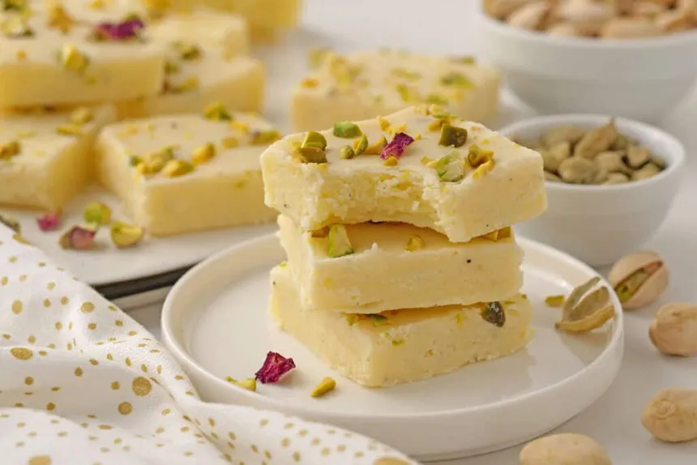

Gulab Jamun
Ingredients
- 1 cup milk powder
- 1/4 cup all-purpose flour (maida)
- 1/4 teaspoon baking soda
- 2 tablespoons ghee (clarified butter)
- 2–3 tablespoons milk (for kneading)
- Oil or ghee for deep frying
- 2 cups sugar
- 2 cups water
- 4–5 green cardamom pods (crushed)
- 1 teaspoon rose water (optional)
- Chopped pistachios or almonds for garnish
Recipe
- In a pan, add sugar, water, and cardamom. Boil for 8–10 minutes until slightly sticky. Add rose water if using. Keep warm.
- In a mixing bowl, combine milk powder, all-purpose flour, and baking soda.
- Add ghee and mix well. Slowly add milk little by little and knead into a soft, smooth dough. Rest for 5–10 minutes.
- Divide the dough into small equal portions and roll into smooth balls without cracks.
- Heat oil or ghee on low to medium flame. Fry the balls slowly, stirring gently, until golden brown.
- Immediately transfer the hot fried balls into the warm sugar syrup. Let them soak for at least 2 hours.
- Garnish with chopped pistachios or almonds and serve warm.

Barfi
Ingredients
- 3 cups milk powder
- 1/2 cups powdered sugar
- /2 cup + 3 tablespoons milk
- 3 tablespoons butter or ghee
- 1/2 to 1 teaspoon ground cardamom
- 1/4 teaspoon salt
- 1 teaspoon vanilla extract
- Approx. 2 tablespoons slivered pistachios
- To garnish: Saffron, rose buds, and silver leaf
Recipe
- Grease a 9×6 baking pan.
- Heat a heavy bottom pan on medium to low heat. Once hot, add in the butter and 1/2 cup of milk. Let the butter melt.
- Once the butter melts, add in the milk powder stirring constantly. Once the powder is incorporated with milk, gradually add in the powdered sugar.
- If there are bits of dry powder left, add in the three tablespoons of milk. If you need to add more milk, add a tablespoon at a time. At this stage the mixture should have a paste like consistency.
- While continuously stirring, cook the mixture for 8-9 minutes or until it easily leaves the surface of the pan. The mixture should look like a dough.
- Turn the heat off and add vanilla essence, cardamom, and a tablespoon of pistachios. Mix everything well. Spread the mixture evenly on the greased pan and top the remaining tablespoon of pistachios
- Let the burfi set for at least three hours. Once set, it can be stored in an airtight container at room temperature for up to seven days.
